This notebook performs music genre classification using two approaches:
!pip install librosa --quietimport glob
import numpy as np
import pandas as pd
import os
os.environ['TF_CPP_MIN_LOG_LEVEL'] = '3'
import warnings
warnings.filterwarnings('ignore')
import librosa
import librosa.display
import matplotlib.pyplot as plt
import seaborn as sns
from sklearn.model_selection import train_test_split
from sklearn.preprocessing import StandardScaler
from sklearn.metrics import confusion_matrix, ConfusionMatrixDisplay
from tensorflow.keras.models import Sequential
from tensorflow.keras.layers import Dense, Dropout, Flatten, Conv2D, MaxPooling2D
from tensorflow.keras.utils import to_categorical
from tensorflow.keras.callbacks import EarlyStopping, ModelCheckpoint
import tensorflow as tf
import kagglehub
sns.set(style="whitegrid")
genres = ['blues', 'classical', 'country', 'disco', 'hiphop', 'jazz', 'metal', 'pop', 'reggae', 'rock']
sampleRate = 22050
duration = 30
segmentLength = 3
samplesPerTrack = sampleRate * duration
segmentsPerTrack = duration // segmentLength
def plotClassDistributions(yTrain, yVal, yTest, modelName):
fig, axes = plt.subplots(1, 3, figsize=(18, 5))
for ax, y, title in zip(axes, [yTrain, yVal, yTest], ['Train', 'Validation', 'Test']):
sns.countplot(x=y, ax=ax)
ax.set_title(f'{title} Set - {modelName}')
ax.set_xlabel('Genre Index')
ax.set_ylabel('Count')
plt.tight_layout()
plt.show()WARNING: All log messages before absl::InitializeLog() is called are written to STDERR
E0000 00:00:1749415614.339294 2039 cuda_dnn.cc:8310] Unable to register cuDNN factory: Attempting to register factory for plugin cuDNN when one has already been registered
E0000 00:00:1749415614.357583 2039 cuda_blas.cc:1418] Unable to register cuBLAS factory: Attempting to register factory for plugin cuBLAS when one has already been registered
We used the GTZAN dataset and prepared it for training an MLP model. Each song was split into smaller 3-second segments. For every segment we extracted MFCCs and six other audio features: zero-crossing rate, spectral centroid, spectral bandwidth, spectral roll-off, spectral contrast, and chroma features. All features were averaged over time so that each segment is represented with a fixed-length vector.
def extractFeaturesMLP(y, sr):
zcr = np.mean(librosa.feature.zero_crossing_rate(y))
spectralCentroid = np.mean(librosa.feature.spectral_centroid(y=y, sr=sr))
spectralBandwidth = np.mean(librosa.feature.spectral_bandwidth(y=y, sr=sr))
rolloff = np.mean(librosa.feature.spectral_rolloff(y=y, sr=sr))
rms = np.mean(librosa.feature.rms(y=y))
tempo = librosa.beat.tempo(y=y, sr=sr)[0]
mfcc = librosa.feature.mfcc(y=y, sr=sr, n_mfcc=13)
mfccs = np.mean(mfcc, axis=1)
return np.hstack([zcr, spectralCentroid, spectralBandwidth, rolloff, rms, tempo, mfccs])
def prepareMLPDataset(baseDir):
X, y = [], []
for i, genre in enumerate(genres):
genreDir = os.path.join(baseDir, genre)
for file in os.listdir(genreDir):
if file.endswith(".wav"):
filePath = os.path.join(genreDir, file)
try:
yFull, sr = librosa.load(filePath, sr=sampleRate)
for s in range(segmentsPerTrack):
start = s * segmentLength * sampleRate
end = start + segmentLength * sampleRate
ySeg = yFull[int(start):int(end)]
if len(ySeg) == int(segmentLength * sampleRate):
features = extractFeaturesMLP(ySeg, sr)
X.append(features)
y.append(i)
except Exception as e:
print(f"Skipping file {filePath} due to error: {e}")
return np.array(X), np.array(y)
path = kagglehub.dataset_download("andradaolteanu/gtzan-dataset-music-genre-classification")
baseDir = os.path.join(path, "Data/genres_original")
print("Dataset path:", baseDir)
X_mlp, y_mlp = prepareMLPDataset(baseDir)
X_train, X_temp, y_train, y_temp = train_test_split(X_mlp, y_mlp, test_size=0.3, stratify=y_mlp, random_state=42)
X_val, X_test, y_val, y_test = train_test_split(X_temp, y_temp, test_size=0.5, stratify=y_temp, random_state=42)
plotClassDistributions(y_train, y_val, y_test, "MLP")
scaler = StandardScaler()
X_train = scaler.fit_transform(X_train)
X_val = scaler.transform(X_val)
X_test = scaler.transform(X_test)Dataset path: /kaggle/input/gtzan-dataset-music-genre-classification/Data/genres_original
Skipping file /kaggle/input/gtzan-dataset-music-genre-classification/Data/genres_original/jazz/jazz.00054.wav due to error:
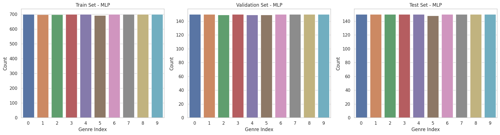
The MLP model was built using a few dense layers with dropout to prevent overfitting. ReLU activation for hidden layers and softmax for the output. The model was trained using categorical crossentropy as the loss function, Adam optimizer, and early stopping based on validation loss.
def buildMLP(inputShape, nClasses):
model = Sequential()
model.add(Dense(256, activation='relu', input_shape=(inputShape,)))
model.add(Dropout(0.3))
model.add(Dense(128, activation='relu'))
model.add(Dropout(0.3))
model.add(Dense(nClasses, activation='softmax'))
model.compile(optimizer='adam', loss='sparse_categorical_crossentropy', metrics=['accuracy'])
return model
mlp = buildMLP(X_train.shape[1], len(genres))
earlyStop = EarlyStopping(monitor='val_loss', patience=5, restore_best_weights=True)
checkpoint = ModelCheckpoint("mlpModel.h5", save_best_only=True)
history_mlp = mlp.fit(
X_train, y_train,
validation_data=(X_val, y_val),
epochs=50,
batch_size=64,
callbacks=[earlyStop, checkpoint],
verbose=0
)plt.figure(figsize=(12, 4))
plt.subplot(1, 2, 1)
plt.plot(history_mlp.history['loss'], label='Train Loss')
plt.plot(history_mlp.history['val_loss'], label='Val Loss')
plt.title("MLP Loss over Epochs")
plt.legend()
plt.subplot(1, 2, 2)
plt.plot(history_mlp.history['accuracy'], label='Train Accuracy')
plt.plot(history_mlp.history['val_accuracy'], label='Val Accuracy')
plt.title("MLP Accuracy over Epochs")
plt.legend()
plt.tight_layout()
plt.show()
y_pred_mlp = mlp.predict(X_test).argmax(axis=1)
cm = confusion_matrix(y_test, y_pred_mlp, normalize='true')
disp = ConfusionMatrixDisplay(confusion_matrix=cm, display_labels=genres)
disp.plot(xticks_rotation=45, cmap="Blues")
plt.title("Normalized Confusion Matrix - MLP")
plt.show()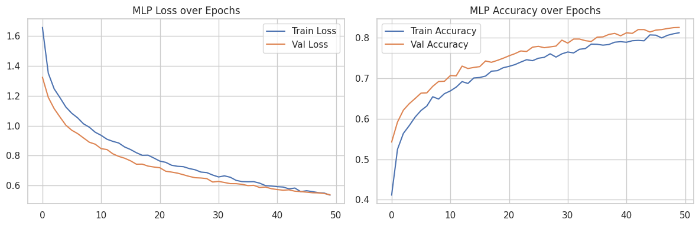
47/47 ━━━━━━━━━━━━━━━━━━━━ 0s 3ms/step
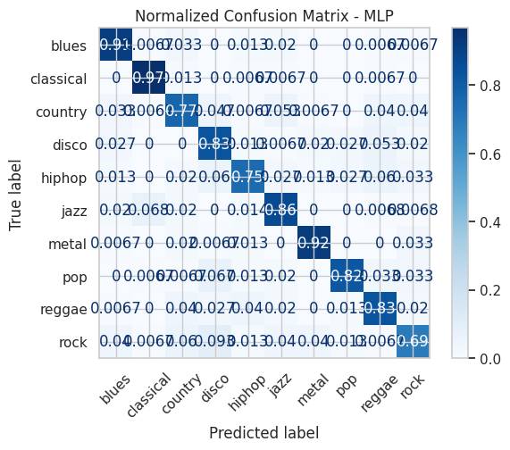
For the CNN model, we again used the GTZAN dataset and split each audio file into 3-second segments. For each segment, we calculated a Mel spectrogram and converted it to decibel scale. This time-frequency representation was used as input for the CNN model, treating it like an image with one channel.
def extractMelSpectrogram(y, sr, n_mels=128):
melSpec = librosa.feature.melspectrogram(y=y, sr=sr, n_fft=2048, hop_length=512, n_mels=n_mels)
melSpecDB = librosa.power_to_db(melSpec, ref=np.max)
return melSpecDB
def prepareCNNDataset(baseDir, n_mels=128):
X, y = [], []
for i, genre in enumerate(genres):
genreDir = os.path.join(baseDir, genre)
for file in os.listdir(genreDir):
if file.endswith(".wav"):
filePath = os.path.join(genreDir, file)
try:
yFull, sr = librosa.load(filePath, sr=sampleRate)
for s in range(segmentsPerTrack):
start = s * segmentLength * sampleRate
end = start + segmentLength * sampleRate
ySeg = yFull[int(start):int(end)]
if len(ySeg) == int(segmentLength * sampleRate):
melSpec = librosa.feature.melspectrogram(
y=ySeg, sr=sr, n_mels=n_mels
)
melSpecDB = librosa.power_to_db(melSpec, ref=np.max)
X.append(melSpecDB[..., np.newaxis])
y.append(i)
except Exception as e:
print(f"Skipping file {filePath} due to error: {e}")
return np.array(X), np.array(y)
X_cnn, y_cnn = prepareCNNDataset(baseDir)
X_train_cnn, X_temp_cnn, y_train_cnn, y_temp_cnn = train_test_split(X_cnn, y_cnn, test_size=0.3, stratify=y_cnn, random_state=42)
X_val_cnn, X_test_cnn, y_val_cnn, y_test_cnn = train_test_split(X_temp_cnn, y_temp_cnn, test_size=0.5, stratify=y_temp_cnn, random_state=42)
plotClassDistributions(y_train_cnn, y_val_cnn, y_test_cnn, "CNN")
print("CNN shapes:")
print("Train:", X_train_cnn.shape)
print("Validation:", X_val_cnn.shape)
print("Test:", X_test_cnn.shape)Skipping file /kaggle/input/gtzan-dataset-music-genre-classification/Data/genres_original/jazz/jazz.00054.wav due to error:
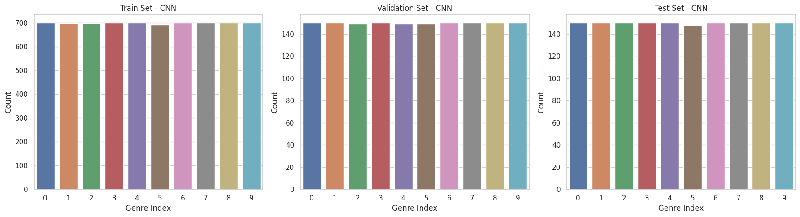
CNN shapes:
Train: (6986, 128, 130, 1)
Validation: (1497, 128, 130, 1)
Test: (1498, 128, 130, 1)
The CNN model was designed to work with spectrogram inputs. It includes convolutional and pooling layers to capture patterns in the frequency and time dimensions, followed by dense layers for classification. Early stopping was used during training to avoid overfitting.
def buildCNN(inputShape, nClasses):
model = Sequential()
model.add(Conv2D(32, (3, 3), activation='relu', input_shape=inputShape))
model.add(MaxPooling2D((2, 2)))
model.add(Dropout(0.3))
model.add(Conv2D(64, (3, 3), activation='relu'))
model.add(MaxPooling2D((2, 2)))
model.add(Dropout(0.3))
model.add(Flatten())
model.add(Dense(128, activation='relu'))
model.add(Dropout(0.3))
model.add(Dense(nClasses, activation='softmax'))
model.compile(optimizer='adam', loss='sparse_categorical_crossentropy', metrics=['accuracy'])
return model
cnn = buildCNN(X_train_cnn.shape[1:], len(genres))
earlyStopCNN = EarlyStopping(monitor='val_loss', patience=5, restore_best_weights=True)
checkpointCNN = ModelCheckpoint("cnnModel.h5", save_best_only=True)
history_cnn = cnn.fit(
X_train_cnn, y_train_cnn,
validation_data=(X_val_cnn, y_val_cnn),
epochs=50,
batch_size=32,
callbacks=[earlyStopCNN, checkpointCNN],
verbose=0
)plt.figure(figsize=(12, 4))
plt.subplot(1, 2, 1)
plt.plot(history_cnn.history['loss'], label='Train Loss')
plt.plot(history_cnn.history['val_loss'], label='Val Loss')
plt.title("CNN Loss over Epochs")
plt.legend()
plt.subplot(1, 2, 2)
plt.plot(history_cnn.history['accuracy'], label='Train Accuracy')
plt.plot(history_cnn.history['val_accuracy'], label='Val Accuracy')
plt.title("CNN Accuracy over Epochs")
plt.legend()
plt.tight_layout()
plt.show()
y_pred_cnn = cnn.predict(X_test_cnn).argmax(axis=1)
cm_cnn = confusion_matrix(y_test_cnn, y_pred_cnn, normalize='true')
disp_cnn = ConfusionMatrixDisplay(confusion_matrix=cm_cnn, display_labels=genres)
disp_cnn.plot(xticks_rotation=45, cmap="Blues")
plt.title("Normalized Confusion Matrix - CNN")
plt.show()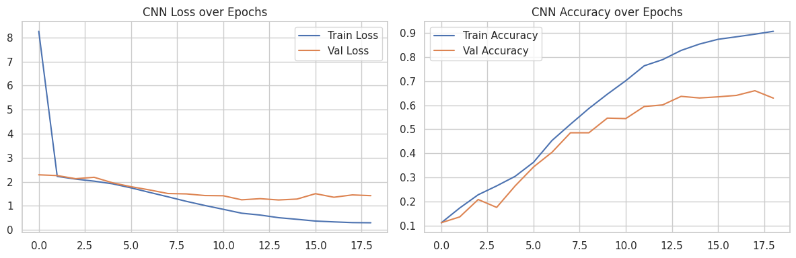
47/47 ━━━━━━━━━━━━━━━━━━━━ 5s 102ms/step
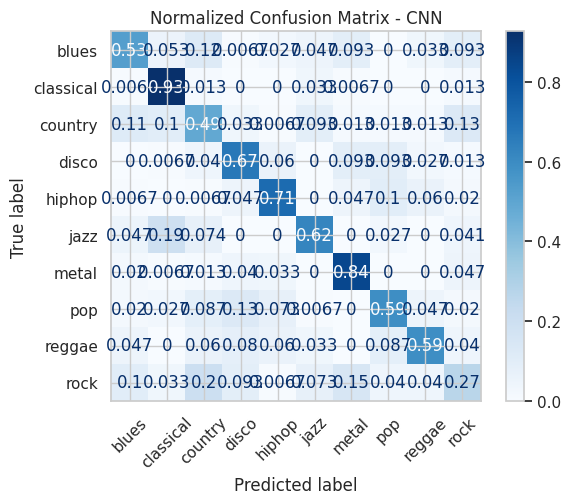
Evaluate trained models on real songs. Each song is split into segments (3s), each segment is classified individually, and the final genre is selected using a majority vote. Results are compared to the expected genre.
def predictGenreFromSong(songPath, model, modelType="cnn", segmentLength=3, n_mels=128):
y, sr = librosa.load(songPath, sr=sampleRate)
segments = int(len(y) / (segmentLength * sampleRate))
preds = []
for i in range(segments):
start = i * segmentLength * sampleRate
end = start + segmentLength * sampleRate
ySeg = y[int(start):int(end)]
if len(ySeg) == int(segmentLength * sampleRate):
if modelType == "cnn":
melSpec = librosa.feature.melspectrogram(y=ySeg, sr=sr, n_mels=n_mels)
melSpecDB = librosa.power_to_db(melSpec, ref=np.max)
melSpecDB = melSpecDB[..., np.newaxis]
melSpecDB = np.expand_dims(melSpecDB, axis=0)
pred = model.predict(melSpecDB, verbose=0).argmax()
elif modelType == "mlp":
features = extractFeaturesMLP(ySeg, sr)
features = scaler.transform([features])
pred = model.predict(features, verbose=0).argmax()
preds.append(pred)
predCounts = pd.Series(preds).value_counts().sort_index()
plt.bar(genres, predCounts.reindex(range(len(genres)), fill_value=0))
plt.xticks(rotation=45)
plt.title(f"Genre Prediction Counts ({modelType.upper()})")
plt.ylabel("Segments Predicted")
plt.show()
majority = predCounts.idxmax()
print("Predicted Genre for file", os.path.basename(songPath), ":", genres[majority])
folderPath = "/kaggle/input/royalty-free-music"
songPaths = sorted(glob.glob(os.path.join(folderPath, "*.wav")))
print("MLP Predictions:")
for songPath in songPaths:
predictGenreFromSong(songPath, mlp, modelType="mlp")
print("CNN Predictions:")
for songPath in songPaths:
predictGenreFromSong(songPath, cnn, modelType="cnn")MLP Predictions:
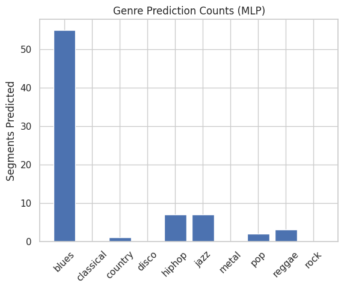
Predicted Genre for file blues.wav : blues
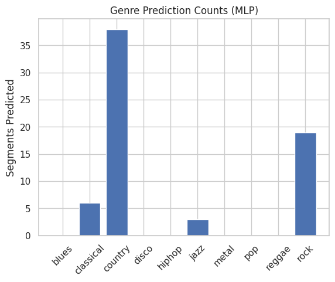
Predicted Genre for file classical.wav : country
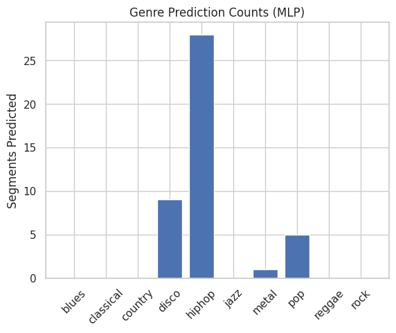
Predicted Genre for file hiphop.wav : hiphop
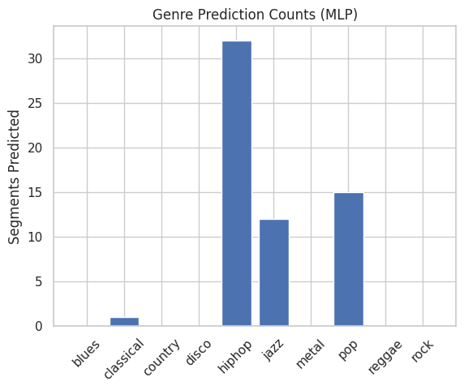
Predicted Genre for file pop.wav : hiphop
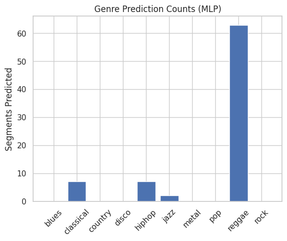
Predicted Genre for file reggae.wav : reggae
CNN Predictions:
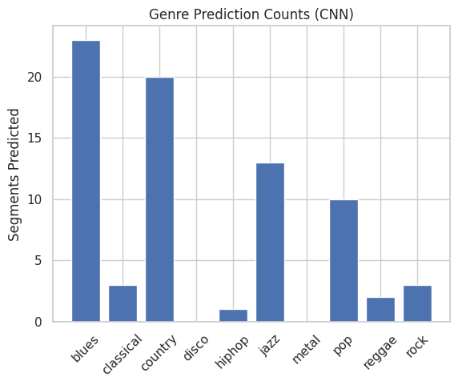
Predicted Genre for file blues.wav : blues
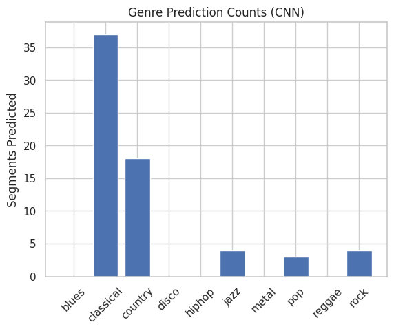
Predicted Genre for file classical.wav : classical
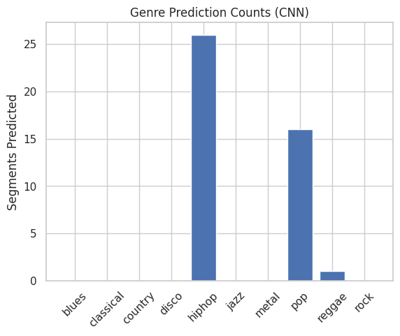
Predicted Genre for file hiphop.wav : hiphop
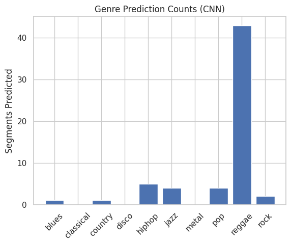
Predicted Genre for file pop.wav : reggae
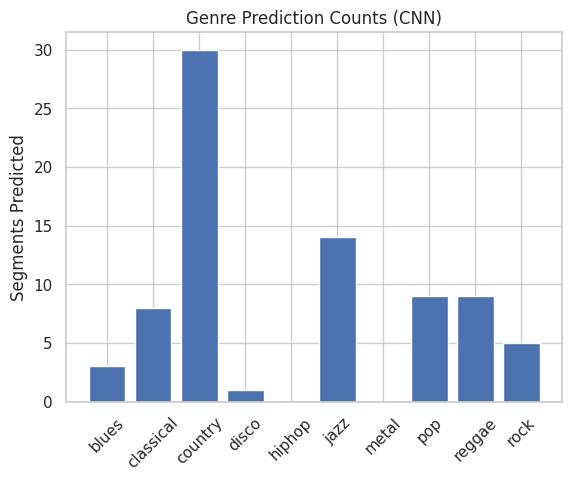
Predicted Genre for file reggae.wav : country